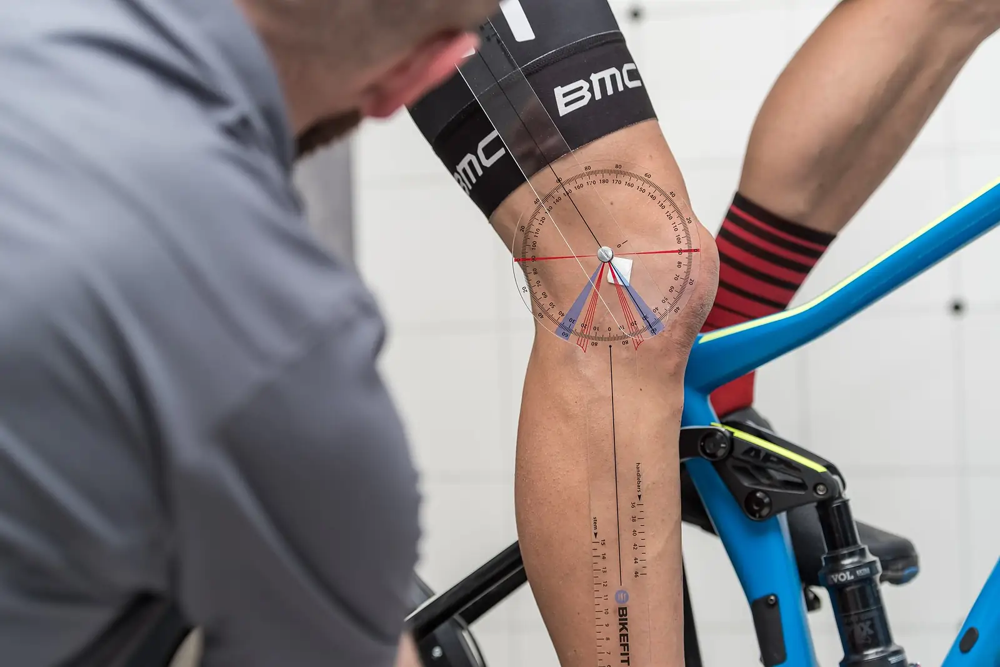
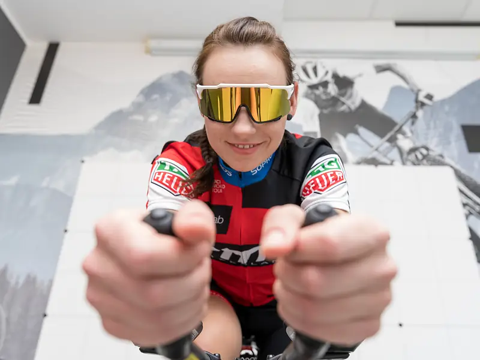
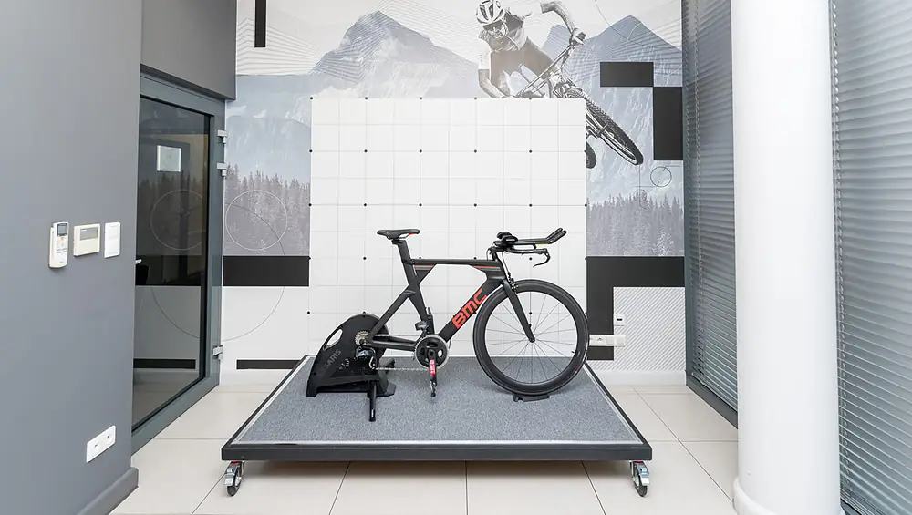
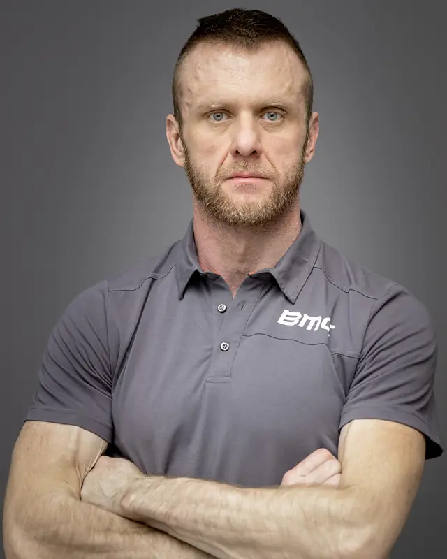

Bike fitting w Mikołowie - rower ustawiony pod Twoje ciało
Jazda na rowerze nie powinna boleć: ani kolan, ani pleców, szyi, bioder czy ramion. Dopasuję ustawienia roweru do Twojej budowy i mobilności.
Zadzwoń: 728 420 803inż. Krzysztof Ramczyk (Kriss) · BMC LAB Mikołów
Na czym polega bike fitting
Fitting to dobór indywidualnych ustawień roweru do budowy anatomicznej i mobilności kolarza. Łączy anatomię, fizjologię, biomechanikę ruchu, fizykę i znajomość potrzeb danego typu kolarstwa.
Dobra pozycja to klucz do efektywnej i wydajnej jazdy, z zachowaniem komfortu i bezpieczeństwa dla narządu ruchu. Celem jest wyeliminowanie bólów i dolegliwości, które pojawiają się przy dłuższej jeździe:
- Kolana
- Plecy
- Szyja
- Biodra
- Ramiona
Te bóle wynikają najczęściej z braku przygotowania siłowo-motorycznego albo ze złego ustawienia roweru. W studiu znajdziemy rozwiązanie na oba problemy.
Fitting to kompromis między mobilnością i możliwościami ciała a jak najbardziej wydajną pozycją podczas jazdy.

Jak przebiega fitting
Od rozmowy do diagnozy, w studiu BMC LAB w Mikołowie.
- WywiadJak i ile jeździsz, jaki masz cel i co dolega.
- Testy diagnostyczneSprawdzenie mobilności i możliwości ciała.
- Ustawienie blokówPozycja buta na pedale.
- Ustawienie roweruPomiary i regulacja pozycji na trenażerze.
- Dobór siodełkaSiodełko dopasowane do Ciebie i Twojej pozycji.
- DiagnozaCzy ustawienie jest optymalne, czy potrzebne są ćwiczenia poprawiające mobilność, żeby uzyskać jeszcze wydajniejszą pozycję.
Z fittingu w studiu. Kliknij zdjęcie, żeby je powiększyć.
Nie tylko fitting
Ustawiona pozycja to początek. Pomagam też w treningu, sprzęcie i przygotowaniu ciała do jazdy.

Wkładki do butów
Indywidualne wkładki dla rowerzystów, kolarzy, biegaczy i do codziennego chodzenia.
Doradztwo
W sprawach rowerowych, indywidualnego treningu i doboru sprzętu.
Treningi
Cotygodniowe treningi w Old Mine. Zapraszam.
Szkolenia indoor cycling
Szkolenia w klubach sportowych, także jako szkoleniowiec programu „Power Cycling” w Rockfit Academy.

inż. Krzysztof Ramczyk (Kriss)
Trener i bike fitter, na Śląsku i na Facebooku znany jako Kriss Trainer
W pracy łączę pasję do kolarstwa z wiedzą z przygotowania motorycznego, siłowego i wytrzymałościowego, anatomii, fizjoterapii, biomechaniki, fizjologii wysiłku i treningu kolarskiego oraz dyplomem inżyniera.
- Trener przygotowania motorycznego
- Trener kolarstwa i trener medyczny
- Instruktor cycling, szkoleniowiec „Power Cycling” w Rockfit Academy
- Kurs bike fittera u Jarosława Dymka, jednego z pierwszych bike fitterów w Polsce
- Doradca z dietetyki i suplementacji w sporcie
- Fitting w studiu BMC LAB Mikołów
Gdzie się uczyłem
- Przygotowanie motoryczne
- Train Movement Academy, Elite Training Academy
- Metodyka treningu
- Maciej Bielski, Wojtek Jusiel
- Anatomia funkcjonalna i fizjologia
- Mauricz Training Center
- Fizjoterapia
- dr Ryszard Biernat
- Dietetyka i suplementacja
- Jakub Mauricz

Założyłem Sobotnią Grupę Kolarską, jedną z największych ustawek szosowych na Śląsku, oraz Kriss Cycling Team, grupę kolarzy amatorów z całej Polski startujących w lokalnych zawodach. Kriss Trainer na Facebooku